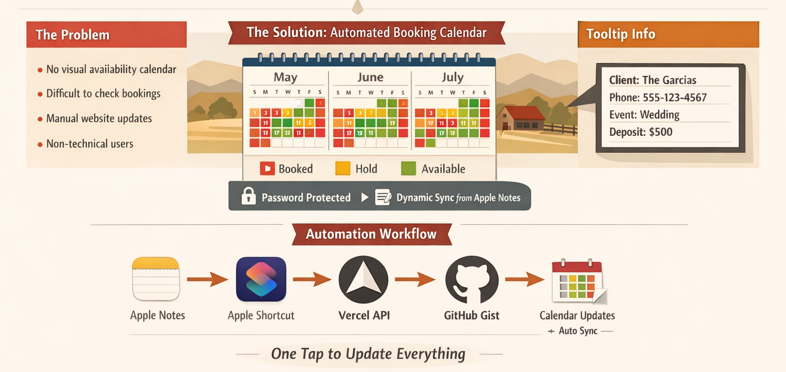

Revenue Operations Leader · Digital Solutions Builder
Scaling businesses through operations strategy, technology, and data.
Senior Revenue Operations leader and digital solutions builder with 5+ years driving go-to-market performance — and a growing consulting practice helping small businesses scale smarter.
Servicios disponibles en español
Experience
Where I've Worked
From early-career foundations to leading Revenue Operations at scale in B2B SaaS.
May 2026 — Present
Senior Business Analyst, GTM Operations
New Role — To Be Announced
Continuing my Revenue Operations work in a GTM Operations role at a global digital consultancy — partnering with B2B clients on GTM strategy, sales process optimization, forecasting, and territory design. The title shifts to ‘Senior Business Analyst’ in consultancy taxonomy, but the work remains RevOps at its core: same problems, broader client portfolio.
Feb 2026 — Apr 2026
Independent RevOps & Operations Consultant
Freelance
Took on a focused consulting period between full-time roles. Advised small businesses and B2B SaaS clients on GTM strategy, territory planning, and operational tooling, while shipping bilingual websites and analytics dashboards for family-run and community-facing organizations.
2025 — Jan 2026
Senior Manager, Revenue Operations
Exiger
Operationalized executive operating cadence for 40+ global reps. Redesigned territories with hierarchical rollups. Implemented Clari forecasting and MEDDPIC methodology, increasing forecast accuracy by 18%. Reduced deal approval cycles to same-day processing.
Apr 2024 — Dec 2024
Sales Operations Specialist
Exiger
Managed 90–100 deals quarterly (ARR $75K–$750K) across Government and Commercial teams in AMER, EMEA, and ROW. Rebuilt commissions reporting and created standardized GTM SOPs. Accelerated monthly commissions processing by ~50%.
2024 — Present
Revenue Operations Consultant
Freelance
Supporting GTM strategy development, ICP refinement, territory planning, lead-scoring frameworks, and workflow integration across departments for multiple clients.
2023 — 2024
Revenue Operations Analyst
eSUB Construction Software
Managed deal-desk operations processing ~30 deals quarterly. Built CSM dashboards for $1.9M ARR renewal accounts. Improved data quality by ~15% QoQ.
2023
Deal Desk / Revenue Analyst
Restaurant365
Processed ~60 deals monthly across SMB and mid-market segments. Reduced rep errors by ~20% through training. Rebuilt reports and dashboards.
2022 — 2023
Sr. Revenue Operations Analyst
Honorlock
Built weekly GTM health scorecard. Supported territory redesign for 20-rep EdTech cohort. Reduced priority deal surfacing time by ~50%.
2021 — 2022
Revenue Operations Business Analyst
Chatmeter
2011 — 2020
Earlier Career
Services
What I Can Build For You
Web Development & Digital Presence
Custom websites built from scratch — responsive, bilingual, SEO-optimized, and deployed fast. From single-page business sites to booking systems and automation pipelines. I design, code, and launch.
See My Work →Real Estate & STR Analytics
Market intelligence dashboards, pricing benchmarks, and competitive analysis for short-term rental operators and real estate investors. Data-driven tools built to help you make smarter investment decisions.
Let’s Talk →Small Business Operations Consulting
Process design, bilingual staff training guides, operational documentation, music/tech system setup, and marketing materials for family-run and growing businesses. I help you professionalize operations without losing what makes your business special.
Work With Me →Certifications
Continuous Learning
Tools, frameworks, and methodologies that drive revenue performance.
Revenue Operations & Sales
- MEDDPICC (2025)
- HubSpot RevOps (2026)
- Territory Management
- Sales Channel Mgmt
- Comp & Incentive Plans
- Excel for Sales
Salesforce & CRM
- Learning Salesforce
- Trailhead Badges (34+)
- ETO Admin Boot Camp
Data & Analytics
- BI Analyst Course
- Tableau CRM
- SQL 8-Week Challenge
- Data Visualization
- Google Analytics
- Customer Insights (2026)
- Telling Stories with Data
- Data Analytics for Business
Strategy & Leadership
- Management Consulting
- MBA Fundamentals
- Agile Methodologies
- Project Management
- Strategic Thinking
- Writing a Proposal (2026)
- Product Roadmapping (2026)
- Communication Foundations
- Emotional Intelligence
- Interpersonal Communication
- Agile Foundations (2026)
- Generative AI for Business Leaders (2026)
RevOps in Practice
Work Samples
Frameworks and models I built using fictitious data to showcase how I approach common RevOps challenges.
Territory Design & Account Coverage Model
Northstar SaaS · Territory PlanningAccount segmentation, assignment rules, coverage models, and hierarchy rollups for a multi-segment sales org.
View Sample →Forecast Inspection & Pipeline Review Framework
Northstar SaaS · Forecast OperationsStructured framework for forecast reviews with stage exit criteria, deal inspection checklists, red flags, and MEDDPICC qualification checkpoints.
View Sample →Executive GTM Health Dashboard
Northstar SaaS · Executive ReportingWeekly GTM scorecard tracking pipeline health, marketing funnel, BDR activity, and forecast confidence across segments.
View Sample →Sales Commission Plan & Calculator
North Star Analytics · Compensation DesignEnd-to-end commission plan with tiered accelerators, MEDDPICC compliance kickers, SPIF programs, and a dynamic Excel workbook for attainment tracking, payout modeling, and scenario analysis across an 8-rep sales team.
Multi-Touch Attribution Analysis
Northstar SaaS · Marketing AttributionChannel attribution modeling comparing first-touch, last-touch, linear, and W-shaped models across $4.2M in closed-won revenue with channel efficiency analysis and budget reallocation recommendations.
View Sample →Customer Health Score & Churn Prevention Framework
Northstar SaaS · Customer SuccessWeighted composite health scoring model using 6 data sources with automated risk tiers, SLA-bound response playbooks, and an 8-week implementation roadmap targeting $3.2M in preventable churn.
View Sample →Bookings vs. Revenue Reconciliation Model
Northstar SaaS · Sales-Finance Alignment20-deal model bridging sales bookings to recognized revenue with amendment handling, monthly recognition schedules, and automated cross-tab reconciliation with variance analysis.
View Sample →What Others Say
Recommendations
From colleagues, managers, and cross-functional partners on LinkedIn.
What I've Built
Projects
Websites I hand-coded from scratch, automation systems, and research that shaped my perspective.

Ranch Booking System Automation
System Design · Automation · ServerlessA lightweight booking operations system that syncs my family's Apple Note to a live, color-coded availability calendar — no backend, no manual updates. One tap on an Apple Shortcut pushes data through a serverless pipeline to the website instantly.
Rancho Los Potrillos
Event Venue & Ranch · Santa Rosa, CABilingual event venue website with booking automation, local SEO optimization, and a custom serverless availability calendar. Built for a multi-service venue hosting weddings, quinceañeras, and equestrian events.
Visit Site →Taqueria Los Potrillos
Family Restaurant · Petaluma, CAResponsive restaurant website with local SEO, rich food photography, and bilingual content for an established Mexican restaurant serving Sonoma County since 1993.
Visit Site →San José de Gracia
Community Tourism · Jalisco, MéxicoBilingual cultural tourism website connecting visitors with local businesses, festivals, and heritage in a historic highland town in Jalisco, México. Built to preserve community identity and drive local economic engagement.
Visit Site →Girasol Espresso & Tea
Business Card Design · Sonoma & MarinDesigned a premium business card for a hand-crafted espresso & tea brand. Black and gold palette with custom sunflower-coffee logo.
View Card →jaimem.com
Personal PortfolioMy professional portfolio — the site you're on right now. Built from scratch with a bilingual EN/ES toggle, full SEO optimization, and deployed on Vercel.
Mexican Migrant Program
UC San Diego · 2017Field research across San Diego Unified Schools and Tijuana City Schools examining how schools affect migrant student aspirations, economic mobility, and career outcomes.
Immigrant Integration Research
UC San Diego · 2015–2017Independent research on the role of nonprofits in integrating newly arrived immigrants from Mexico — examining social, health, economic, and educational dimensions.
Education
Foundation
Master of International Affairs
University of California, San Diego · School of Global Policy & Strategy
Management concentration. Coursework in international economics, policy analysis, managerial economics, and nonprofit management.
B.A. Political Science
San Francisco State University · Minor: International Relations
Fraternity leadership and student government. Active in campus organizations.
Dean's List × 4About
A Bit About Me
Originally from Sonoma County with roots in Jalisco, Mexico. I've lived across California — from San Francisco to San Diego — completing my undergraduate degree at San Francisco State and earning my Master's at UC San Diego by age 23.
I maintain close family ties and visit relatives in rural Mexico regularly. I'm fully bilingual in English and Spanish, and my cross-cultural background informs everything from how I approach team dynamics to how I think about global GTM strategy.
Outside of work, I've backpacked through Europe, reunited with a graduate school friend in Argentina, and continue to explore new places whenever I can. Travel is how I reset and gain perspective.
Equestrian
Grew up around horses in rural Jalisco
Archery
Started in grad school, never stopped
Travel
Europe, Argentina, Mexico
Hiking
Coastal trails & redwoods
Contact
Let's build something together.
Whether you need RevOps consulting, a custom website, operational support for your business, or just want to talk strategy — let's connect.